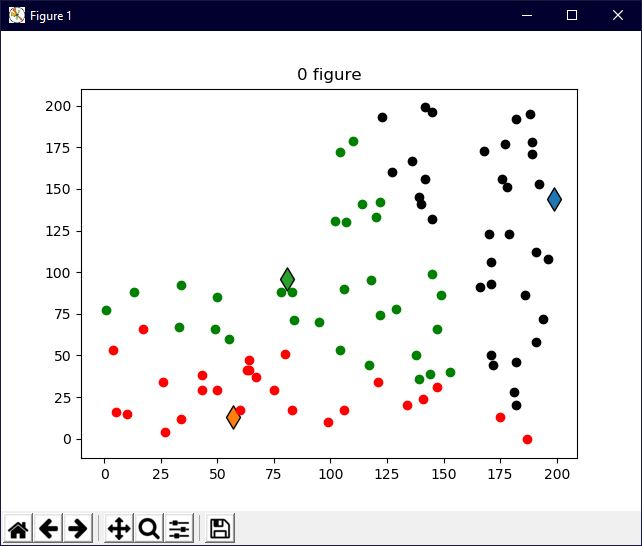
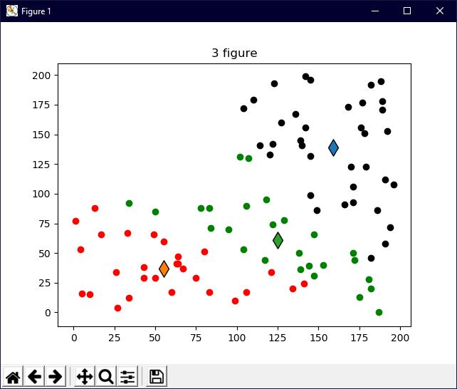
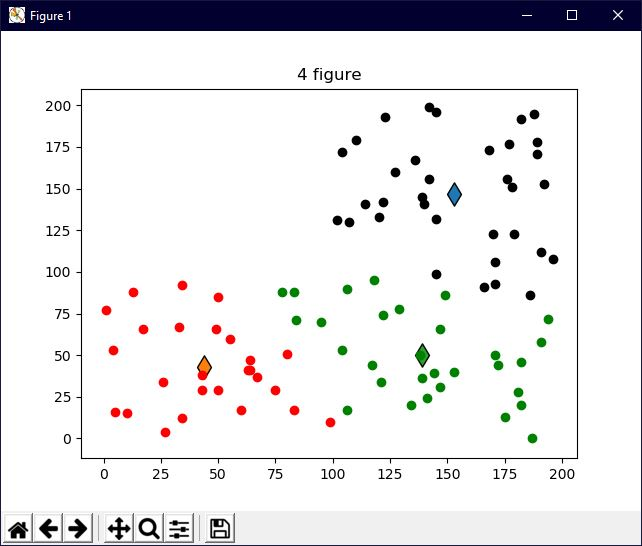
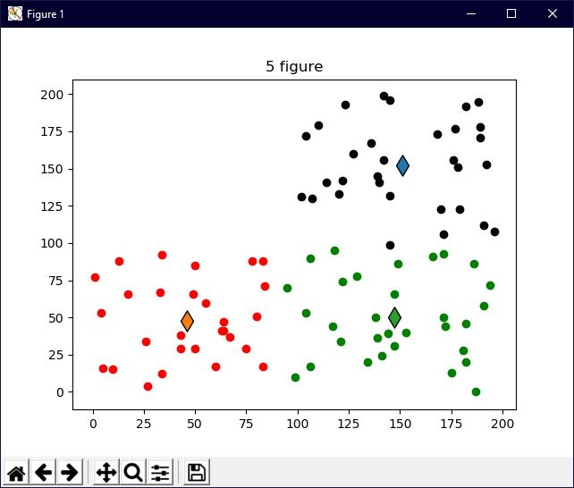
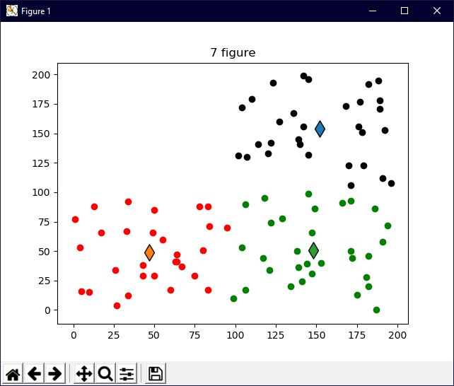

K-Means Clustering
DownloadThis video provides a little background behind how a common AI model, K-means clustering, makes decisions as well as a demonstration of the code in action written from scratch. The code used in this project is linked above for download at my GitHub. Feel free to try the code out yourself. Have fun!
Screenshots
The program displays the graph after each iteration through the program
After 3 iterations...
The green centoid is migrating to the bottom right corner...
The three groups are becoming very obvious...
Very slight changes are made in the last two iterations...
